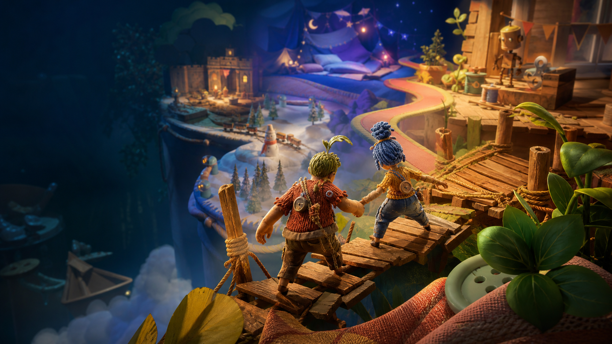
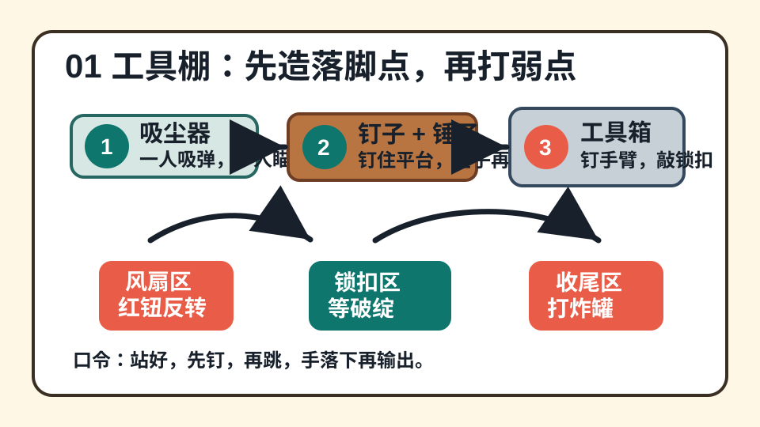
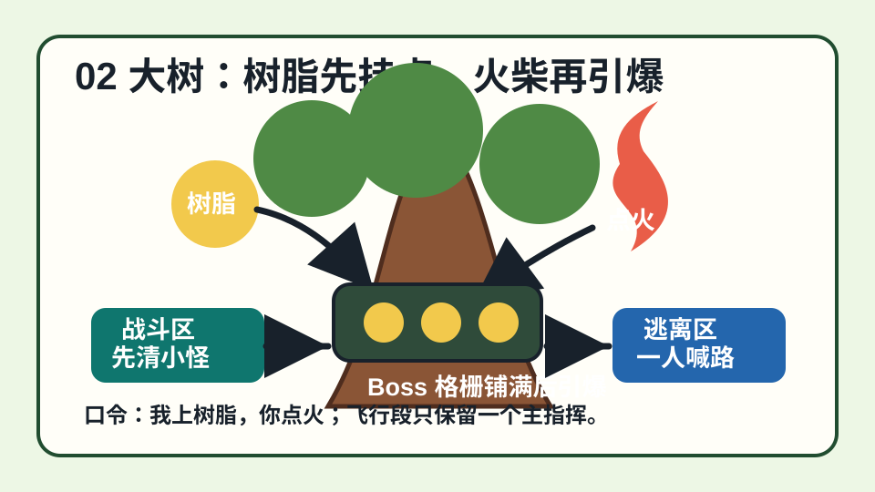
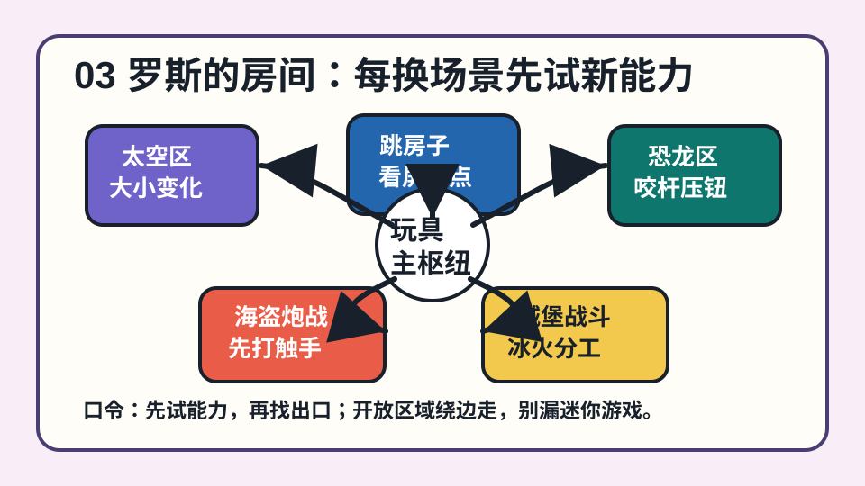
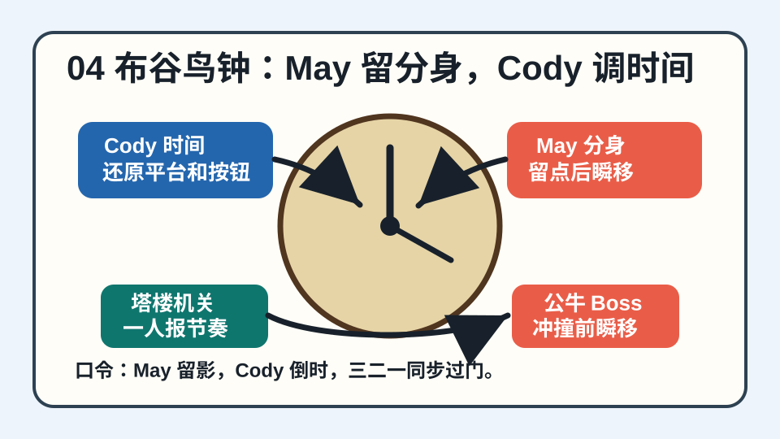
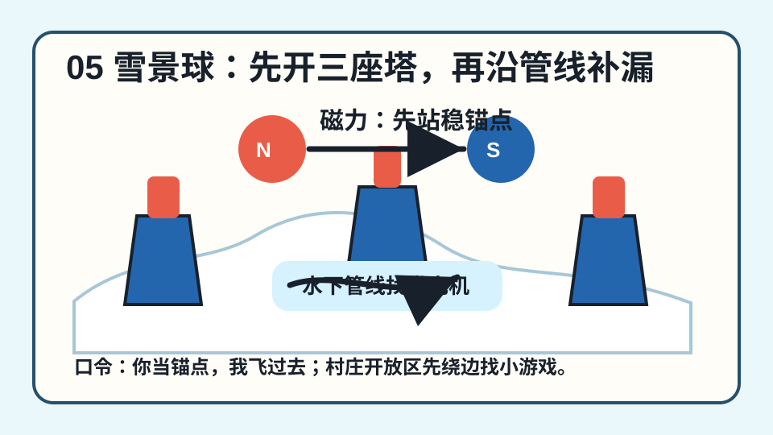
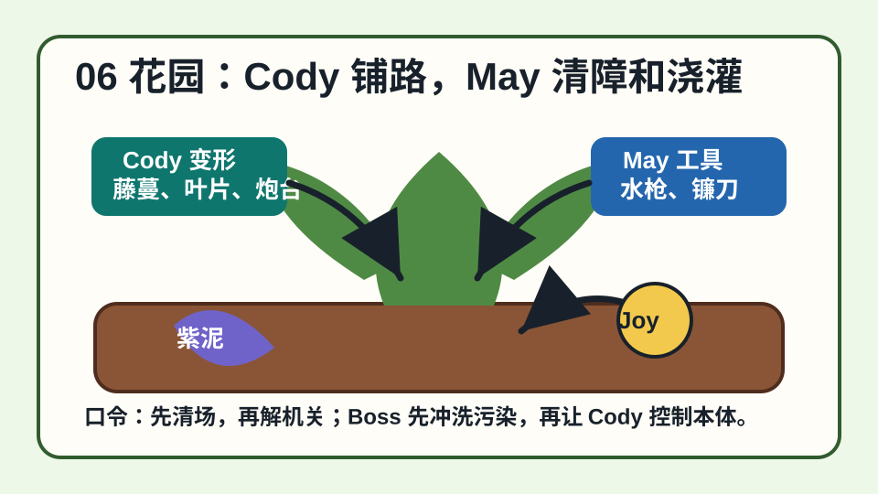
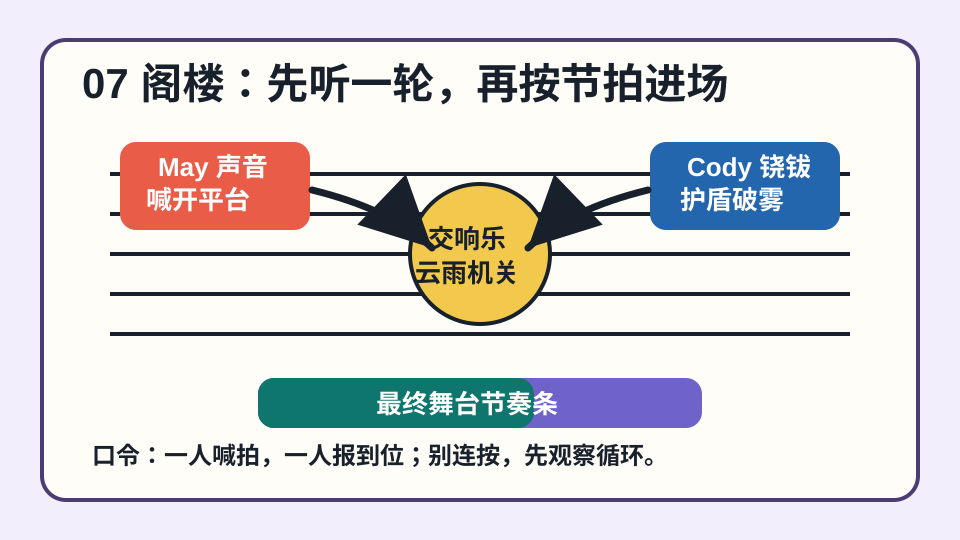

跳跃距离总差一点
先确认是否用完整的二段跳、冲刺、抓边三段节奏。很多早期平台不是难跳，而是少按了一段位移。

双人协作通关手册
从工具棚到阁楼，把七大章节拆成路线、分工、原创图解、卡点和回放清单。适合第一次通关时开在旁边，也适合补漏迷你游戏时快速定位。
包含轻度章节与机制剧透，不包含结局对白复述。
一周目路线
首次游玩是固定线性推进。建议一晚打一到两个大章节，遇到卡点先交换“我负责什么、你等哪个信号”，比反复硬跳更快。
卡关速查
先确认是否用完整的二段跳、冲刺、抓边三段节奏。很多早期平台不是难跳，而是少按了一段位移。
约定一个短口令，例如“站好、三二一、按”。不要边跑边喊，先让两个人都站到触发点。
先分清谁负责制造破绽，谁负责输出弱点。失败后不要立刻复活冲上去，先观察 Boss 的三到四个循环动作。
开放区域先绕边走，看到双人操作台、分岔路、异常道具就停一下。通关后可以通过章节选择补漏。
节奏机关尽量让延迟低的一方执行高精度跳跃，另一方负责稳定开关、牵引或站位。
用“我在左高台”“看黄色按钮旁边”这种位置描述，少说“这里”“那边”。这游戏的沟通比操作更值钱。
每章图解
下面的图片是原创通关图解，用来标出关键机关、Boss 处理顺序和双人分工。每张卡片都附了外部攻略案例链接，想看更细流程时可以继续打开对照。

这一章是基础课，别急着跑图，先把二段跳、冲刺、抓边和“一个人先站稳”的节奏练顺。
迷你游戏提醒：工具棚前段多检查岔路和可互动装置，通关后可用章节选择补漏。

从这里开始战斗压力变高，最重要的是别各打各的，先约定谁铺树脂、谁点火、谁喊飞行方向。
迷你游戏提醒：树洞和基地段落留意分岔平台，紫色提示物通常意味着可互动玩法。

这是最长也最花的一章，真正的难点不是单一操作，而是每隔一段就要换一套协作语言。
迷你游戏提醒：玩具区开放范围大，先绕边检查枕头堡、太空电梯和游乐设施旁边。

这一章最吃同步。很多失败不是跳不过去，而是分身点、时间进度和起跑口令没有统一。
迷你游戏提醒：钟楼区域完成机关前先绕平台，很多小游戏入口不在主路正中。

雪景球的核心是磁力和开放区探索。先判断吸引还是排斥，再决定谁站稳当锚点。
迷你游戏提醒：滑冰、钟塔和水下分支都容易藏小游戏，开放区先扫边再推进主目标。

这一章的重点是先处理持续干扰，再解机关。Cody 每次变形前最好说清楚下一步要做什么。
迷你游戏提醒：青蛙池塘、温室和分岔花坛都值得慢一点搜，别只盯主路箭头。

最后一章更考验节奏沟通。不要看到机关就冲，先让两个人都知道循环从哪里开始。
迷你游戏提醒：舞台准备区和排练区有多段支路，进入大门或演出前先检查两侧。
The Shed
Intro、Wake-up Call、Biting the Dust、The Depths、Wired Up
May 侧重锤子与敲击，Cody 侧重钉子与固定点；后段加入吸尘器气流、风扇和工具箱 Boss。
先练熟二段跳加冲刺。钉子机关里，Cody 先把可落脚点固定好，May 再出发，不要两个人同时乱跑。
工具箱战斗时，Cody 盯住可钉住的手臂木板，May 等破绽出现再沿钉子路线敲锁。
搭档口令：先钉、再跳、等手落下。
The Tree
Fresh Air、Captured、Deeply Rooted、Extermination、Getaway
一人铺树脂，一人用火柴引爆。战斗比工具棚更密集，部分段落还会进入载具与飞行追逐。
树脂不要乱涂满屏，优先贴在敌人弱点、机关缺口或移动目标上；火柴玩家等树脂覆盖后再引爆。
黄蜂战斗要先处理小怪压力，再集中打弱点。飞行段落一个人主喊方向，另一个人少打断。
搭档口令：我上树脂，你点火。
Rose's Room
Pillow Fort、Spaced Out、Hopscotch、Train Station、Dino Land、Pirates Ahoy、The Greatest Show、Once Upon a Time、Dungeon Crawler、The Queen
这一章玩法变化最多，包含大小变化、太空移动、玩具关卡、恐龙协作、海盗炮战和童话城堡。
每换一个场景都先试新能力，不要套用上一章思路。开放玩具区多绕边走，迷你游戏和互动彩蛋很容易藏在角落。
大小变化段落里，小体型负责进入窄路和触发内部机关，大体型负责压板、抬升和保护路线。
搭档口令：先试能力，再找出口。
Cuckoo Clock
Gates of Time、Clockworks、A Blast from the Past
May 的分身用于留点回位，Cody 的时间控制用于还原、暂停或配合机关移动。
这一章不要抢跑。先让 May 留分身，再让 Cody 调时间，最后同步冲刺，顺序错了就会反复掉下去。
钟楼和轨道机关的关键是“预留回退点”。May 别把分身放在太远处，Cody 调时间时要持续报进度。
搭档口令：May 留影，Cody 倒时，一起走。
Snow Globe
Warming Up、Winter Village、Beneath the Ice、Slippery Slopes
两人围绕磁力吸引与排斥推进，冰面移动和水下探索会让节奏比前几章更开阔。
看到磁铁、金属平台、滑轨先判断是拉近还是推开。冬季村庄是开放区，完成主目标前先检查支路。
磁力跳跃时一人先站稳当锚点，另一人再飞。两个人同时移动会让落点不可控。
搭档口令：你当锚点，我飞过去。
Garden
Green Fingers、Weed Whacking、Trespassing、Frog Pond、Affliction
Cody 会频繁切换植物形态，May 负责清障、浇灌、攻击和保护路线。
先清掉会持续干扰的杂草和敌人，再解机关。Cody 变形前要先说清楚自己准备变成什么。
青蛙和植物平台段落要把路线当成接力：一人先铺路，另一人通过后马上回头帮对方。
搭档口令：我铺路，你清场。
The Attic
Setting the Stage、Rehearsal、Symphony、Turn Up、A Grand Finale
音乐、声波、节拍和舞台机关成为主轴，很多段落更考验共同节奏而不是单人反应。
看清节奏提示后再行动。不要在音乐机关里连按乱冲，先听一轮循环，再按节拍进入。
终盘平台会同时给两个人压力，建议一个人喊节拍，另一个人只反馈“到位”或“没到”。
搭档口令：听一轮，再进场。
没有匹配的章节，换一个关键词试试。
补漏与回放
《双人成行》的主线推进是线性的，但每个大章内都有可回放小节。首次游玩不用为了收集打断节奏，结局后再回头补迷你游戏会轻松很多。
资料来源
本页的章节结构参考公开攻略资料，游戏类型、平台和合作规则优先参考 Hazelight 与 EA 官方页面。攻略文字为重新整理的中文通关建议，不搬运官方截图。 每章通关图片为本项目原创绘制的示意图，用于教学和速查。